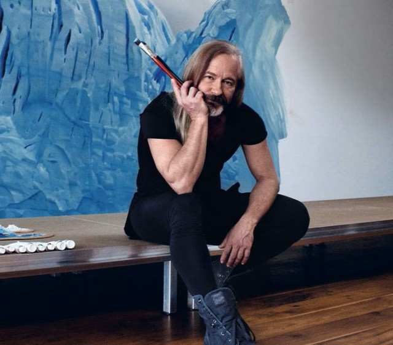
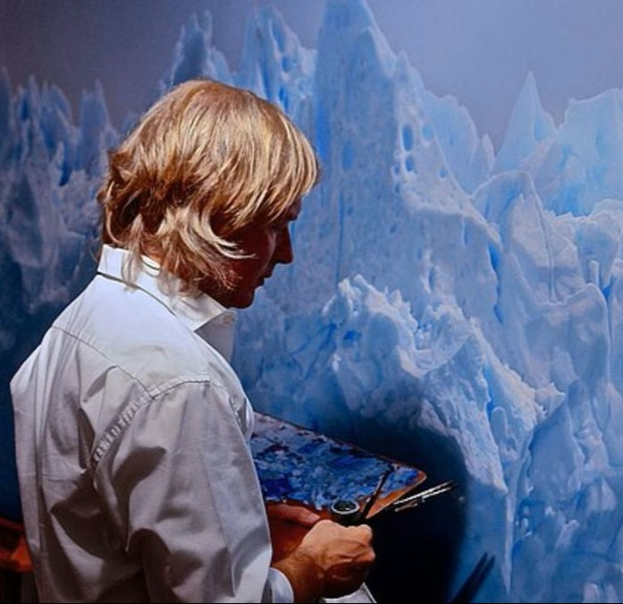

Orígenes en Villa Ballester
Helmut Ditsch, además de ser un montañista extremo, compositor musical y recientemente cineasta, es conocido como un artista plástico contemporáneo y vivo dentro de la historia de el arte nacional por su gran cotización en el mercado internacional y sus increíbles pinturas de dimensiones monumentales inspiradas en paisajes naturales extremos.
Nació un 6 de julio de 1962 en el barrio de Villa Ballester, provincia de Buenos Aires, Argentina, a pesar de que sus padres eran austríacos. Aproximadamente entre sus 5 y 6 años, su madre (Inge) falleció a causa de una enfermedad. Este hecho fue muy importante ya que, debido a la inocencia de tan temprana edad, al preguntarle a su padre dónde se encontraba ella, este le respondió que la encontraría “en cada expresión de la naturaleza”. Tal frase marcó su vida y sus obras para siempre.

Comienzos en el arte
Desde pequeño, se aferró al mundo artístico. Solía pintar de forma completamente autodidacta, y en su adolescencia, trans unas vacaciones de turismo aventura con su padre y sus hermanos, se apasionó por el montañismo extremo. Buscaba en aquellas altas cumbres y entornos hostiles, donde sucumbía el frio, la altura y la soledad, una conexión espiritual y respuestas a aquel trauma de su infancia que tanto lo marcó.
Al adentrarse de lleno al mundo de la pintura artística, su padre, con total sinceridad le dijo “Nunca vas a tener plata, pero vas a ser feliz”. Esta frase, a pesar de que suene desalentadora, le permitió a Ditsch despojarse de toda aquella presión comercial y crear con total libertad.
El salto a Europa
A sus 26 años decidió ir a vivirse a Viena, capital de Austria. Gracias a que sus abuelos eran de allí, se comunicaba en alemán con grata fluidez, y logro ingresar en la prestigiosa Academia de Bellas Artes de Viena. Allí estudió a fondo técnicas de grandes maestros como Caspar David Friedrich y Johannes Vermeer, logrando egresarse con las más altas distinciones.
En 1997, el Banco Nacional de Austria le encargó una obra importante, la cual impulsó su despegue profesional y le abrió las puertas del mercado europeo. Luego vivió un tiempo en Irlanda y finalmente se radicó en Vaduz, la capital de Liechtenstein, al pie de los Alpes, donde vive actualmente.
Actualidad
En los últimos años, tuvo su debut en el arte cinematográfico con el estreno de su primer largometraje como director y protagonista: “Helmut. El hielo y la eternidad transitoria”. La película fue presentada en el Festival Internacional de Cine de Mar del Plata y no relata una biografía tradicional, sino un viaje íntimo y poético sobre la memoria, la naturaleza y el duelo por las dos mujeres mas importantes de su vida: su madre y su esposa (Marion), quien falleció años atrás.
“Pinté siempre en formato película… no veo diferencias entre la pintura, la poesía, la música y la cinematografía”.
Por otro lado, después de pasar unos siete años trabajando en un perfil muy bajo y recluido, volvió con fuerza a mostrarse en redes sociales. Mediante videos frontales conocidos como “reels” en Instagram, muestra una pequeña parte del proceso de pintura en su taller, cuenta cuándo termina una pieza y avisa que sus obras están disponibles, dejando el contacto directo de su atelier. Este formato va de la mano a una crítica a las galerías tradicionales, ya que, para él, vender sin intermediarios es una forma de mantener la independencia artística.